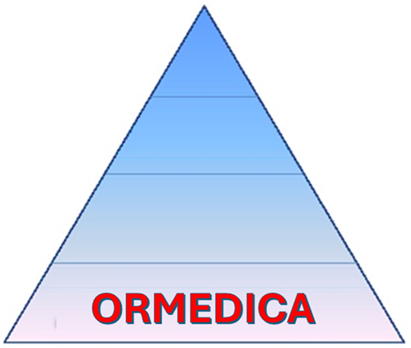

Calculadora del Score GRACE
Edad (años)
Frecuencia cardíaca (lpm)
Presión arterial sistólica (mmHg)
Creatinina (mg/dL)
Clase Killip
I
II
III
IV
Paro cardíaco al ingreso
No
Si
Cambios en el segmento ST
No
Si
Elevación de enzimas cardíacos
No
Si
Calcular
Reset